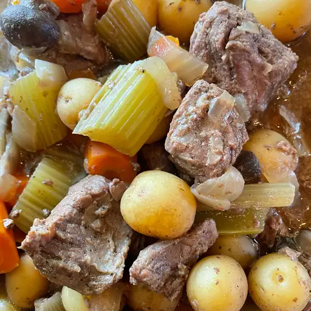

Beef Stew

image of Slow Cooker Beef Stew
ingredients
- 2 pounds beef stew meat, cubed
- 3 potatoes, peeled and diced
- 3 carrots, peeled and diced
- 3 stalks celery, diced
- 1 onion, diced
- 3 cloves garlic, minced
- 2 cups beef broth
- 1 can diced tomatoes
- 2 tablespoons tomato paste
- 1 tablespoon Worcestershire sauce
- 1 teaspoon dried thyme
- 1 teaspoon dried rosemary
- Salt and pepper, to taste
Steps
- In a large skillet, brown the beef over medium-high heat.
- Add the beef to the slow cooker, along with the potatoes, carrots, celery, onion, and garlic.
- In a separate bowl, mix together the beef broth, diced tomatoes, tomato paste, Worcestershire sauce, thyme, rosemary, salt, and pepper.
- Pour the mixture over the beef and vegetables in the slow cooker.
- Cover and cook on low for 8-10 hours, or on high for 4-6 hours.
- Serve hot with crusty bread or over rice.